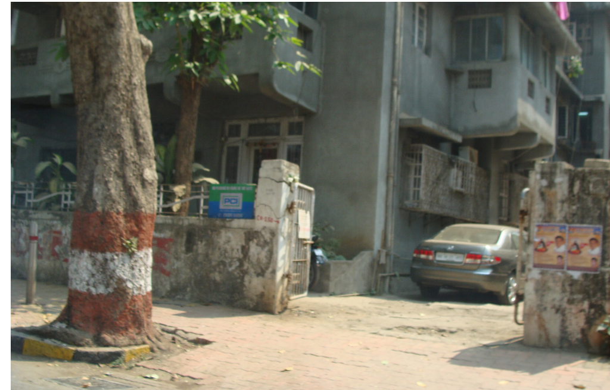

1st Log
I wanted to write a couple of weeks ago, but was in a rush several days before leaving during which time my flatmate blew up my laptop; so now, that (using the loaner iPad doesn’t cut it) combined with not having regular internet access and my overbearing extended family (EF) means that I have to make a protracted effort if I want to write or focus on anything for more than a minute or two (it’s still unbelievable to me, as in I don’t understand their internal mental process, how they are not able to leave someone alone for (literally) 5 minutes). I may have to wait until I get to Europe (for more than a few hours) before I get another chance to check email.
Not being allowed to focus is just one example of how many things here are difficult in a way that is unnoticeable to people who are used to them, I’m sure there’s plenty of things like that in my own life. For instance it takes about an hour to take a shower. One has to turn on the little water heater (they call it an electric geyser), wait for it to heat up, then slowly fill some buckets before being able to cup some hot water (and soap) on one’s self. Not being able to drink the water (even accidentally while showering) without boiling it for a quarter hour is surprisingly distracting. Many foods have raw water in them (and my extended family hasn’t internalised the no raw water thing, and believe (no shit) that I will starve if they don’t cook for me); one must brush their teeth from a bottle; you can’t take the word of restaurants; etc. I am incredibly happy that my dad found toilet paper (surprisingly hard given how many tourists there are) and had my EF do so many random to them things to get the flat ready, all before I showed up.
{kind=link}
The strident thing about Mumbai is the filth (and the shear number of people in it). It’s so pervasive that one stops noticing it surprisingly quickly. I want some pictures that can show it, but the ones I’ve taken don’t capture it’s scale and omnipresence. Perhaps the best I can do is take one picture and say, everything looks like this:

One of my cousins is going to Switzerland (and leaving India for the first time) in a month and she was wondering if she could drink Swiss tap water and what kinds of pills she’d have to take (having seen me popping pills and boiling water for a week); not really believing me that her immune system is battle hardened and she’d be fine. She, and therefore many others in Bharat, really have no idea how filthy (relative to the west) it is, tacitly believing the whole world is somewhat the same. I suppose this is part of the reason that it was so baffling to my EF when we asked for lots of (apparently random) things to be done to the flat before showing up, there’s just no way to transfer general culture and expectations.
My EF keeps asking what I want to see and I have to keep saying I have no idea what is in Mumbai, and even if I did I have no context to tell if any of it is cool, so they take me around to things that are impressive to them. Some of the time it’s odd, like they took me to a mall. By western standards nothing special about it, maybe a bit dumpy, just a mall. They are so impressed. I should mention that relative to Mumbai my extended family is well-to-do. The room and board is this side of acceptable, which would be impossible if they weren’t middle-class.
My EF hardly knows me, but love me all the same, it’s touching, even if I can’t understand how that works. Suffice to say it’s strange, and so far I’ve had a decent time in Mumbai.
Alright, that’s all for now, there’s more coming as I have time to integrate my notes and find an internet connection.